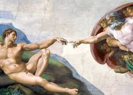
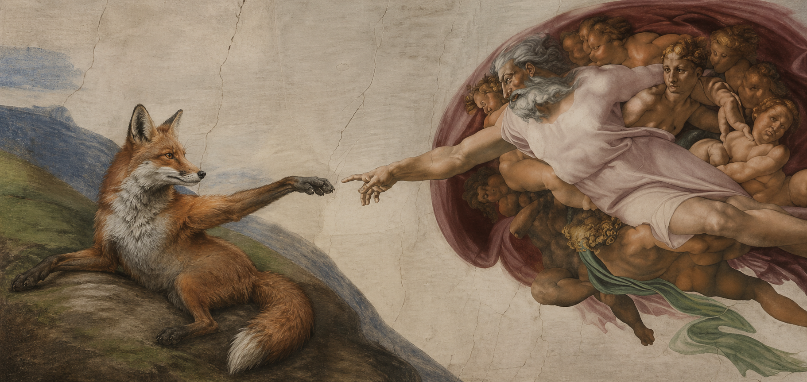

<!DOCTYPE html>
<html>
    <head>
        <title>Titre du site</title>
        <link rel="stylesheet" type="text/css" href="style.css"/>
        <meta charset="utf-8">
    </head>
    <body>
        <div class="container">
            <div class="nom_eleve">
                <h1>T</h1>
            </div>
            
            <div class = "presentation">
                <div class ="image">
				
                    <div>
                        <div>
                            
                        </div>
                        <div>
                           <h3>la création d'adam - michel-ange -1511</h3>
                        </div>
                        <div class="div_tableau_description">
                            <p>La Création d'Adam est l'une des neuf fresques inspirées du livre de la Genèse, peintes par Michel-Ange sur la partie centrale de la voûte du plafond de la chapelle Sixtine</p>
                        </div>
                    </div>
                </div>
                <div class ="image">
                    <div>
                         
                    </div>
                    <div>
                        <h3>la création de renard</h3>
                    </div>
                        <div class="div_tableau_description">
                            <p> Ici le renard est une divinité vénérée par tout les georgiens du sud-ouest. dans cette scene il puni un escroc se faisant passer pour un prophete déniant cette religion et faisant passer renard lui même pour un escroc.le 12 juin 1067 le soit disant prophete s fit mettre a mort par tout les georgiens du sud-ouest. Renard pour se venger le resuscita le fit monter jusqu'a sa demeure dans les cieux lui et tout les georgiens du sud pour faire tomber a l'infini le faux prophete et le laiser s'ecraser sur le sol pour toute sa vie. </p>
                        </div>
                </div>
                <div class="caracteristiques">
                    <ul>
					<li>2,8m par 5,7 m</li>
					<li>1511</li>
					<li>chapelle sixtine</li>
					<li>fait avec la technique a la fresca</li>
					<li>platre</li>
					
                </div>
            </div>
            
        </div>
    </body>
</html>